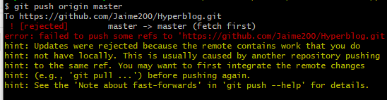

Este es el titulo atractivo e interesante del post
Y este es el parrafo de inicio donde vamos a explicar
En esta sección se agregará unos comandos aprendidos en el curso de git y github de platzi

Suscribete y dale like
Comandos
Sirve para agregar mensajes y archivos al stage
git commit -am "mensaje"
Sirve para agregar/colocer origenes de repositorio de github
git remote add origin [url]
git remote set-url origin [url]
Cambiarde rama
git checkout [nombreRama]
Sirve para ver los origenes
git remote [-v]
Trer todos los cambios de github
git pull origin master
origin = traer del origen (El nombre del repositorio remoto
master = fusionarla con mi rama actual
Merge Fusionar ramas *[esc, shift z z]
1 - git checkout [rama]
2 - git merge [ramaDeCambios]
Llevar los cambios a repositorio en la nube
git push origin master
Sirve resolver el confilcto al momento de agregar un push

git pull origin master --allow-unrelated-histories
Llevar los cambios a repositorio en la nube
git push origin master
Ver configuración global de git
git config -l
Cambiar el email
git config --global user.email "email@email.com"
Crear llave ssh
ssh-keygen -t rsa -b 4096 -C "email@email.com"
Comando para verificar que ssh este ejecutando
eval $(ssh-agent -s)
Agregar la llave ssh
ssh-add [ruta]
Cambiar la url de Origin
git remote set-url origin [url]
Ver los cambios en forma de nodos
git log --all --graph --decorate --oneline
Alias
alias arbolito = "git log --all --graph --decorate --oneline"
Tags
git tag -a v0.1 -m "Mensaje" [hash del commit]
Ver referencia de los tags
git show-ref --tags
Enviar los tags a github
git push origin --tags
listar los tags
git tag
borrar tags
git tag -d [nombreTag]
borrar tags forma especial
git push origin :refs/tags/[nombreTag]
Rebase une una rama a la master (se sugiere hacerlo en forma local)
git rebase master